| z, ? | toggle help (this) |
| space, → | next slide |
| shift-space, ← | previous slide |
| d | toggle debug mode |
| ## <ret> | go to slide # |
| c, t | table of contents (vi) |
| f | toggle footer |
| g | toggle follow |
| r | reload slides |
| n | toggle notes |
| p | run preshow |
| P | toggle pause |
| s | choose style |
$ git log
commit 833328djkslj35f58edc2c8ef3f72e21659ae976
Merge: c6ff987 5fc7389
Author: Another Person <some_dude@somewhere.com>
Date: Thu Apr 22 14:20:15 2010 -0500
Merge branch 'some_branch'
* some_branch:
Minor variable name change
Removing duplication
Corrected examples
Updated this other thing
Adding files
Conflicts:
spec/one_of_the_specs.rb
$ git log
commit 63822392389sjdslsjkl54fa65b8a8a363a17e35
Author: Some Person someone@somedomain.com
Date: Mon Jun 29 16:21:36 2009 -0400
Fixing the coverage task for the current setup
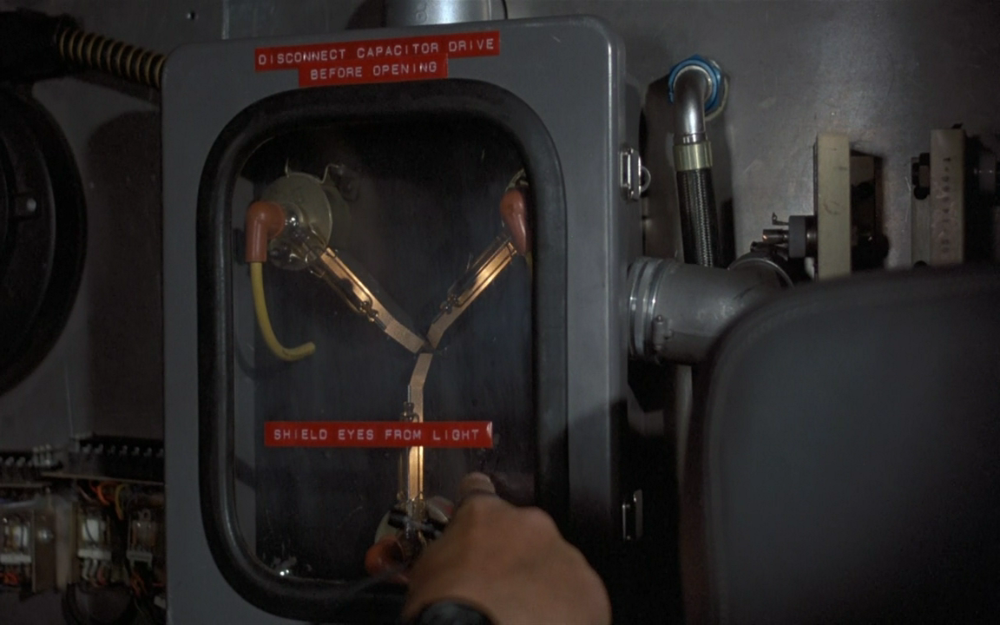
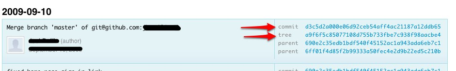
$ mkdir new_project
$ cd new_project
$ mkdir directory_1
$ mkdir directory_2
$ echo 'Content of README' > directory_1/README
$ echo 'Content of README' > directory_2/README
$ git hash-object directory_1/README
d3f48b93b168b70f7bf91e27e6bbf0ef97d52821
$ git hash-object directory_2/README
d3f48b93b168b70f7bf91e27e6bbf0ef97d52821
$ # [note: created git repository w/ a single commit]
$ git cat-file blob d3f48b93
Content of README
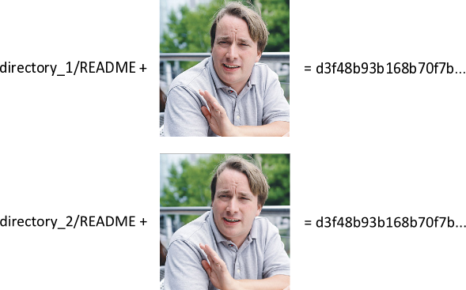
$ git ls-tree HEAD
040000 tree 10c195f4f039d79a0441fefb0e63e07d227edb89 directory_1
040000 tree 10c195f4f039d79a0441fefb0e63e07d227edb89 directory_2
^^^^^^^^^^^^^^ SAME??! ^^^^^^^^^^^^^^^^^ ^^^ DIFFERENT?
$ git ls-tree 10c195f4f039d79a0441fefb0e63e07d227edb89
100644 blob d3f48b93b168b70f7bf91e27e6bbf0ef97d52821 README
^^^^
$ mkdir directory_3
$ echo 'Content of README' > directory_3/different_file_name
^^^^^^ NOTE ^^^^^^^
$ git add . && git commit -a -m"Added new file in directory_3"
$ git ls-tree HEAD
040000 tree 10c195f4f039d79a0441fefb0e63e07d227edb89 directory_1
040000 tree 10c195f4f039d79a0441fefb0e63e07d227edb89 directory_2
040000 tree 56b93cce25073a26c67c07d7fe0b744668bf0d32 directory_3
^^^^^^^^^^^^^^ DIFFERENT? ^^^^^^^^^^^^^^
WHY?
$ git ls-tree 10c195f4f039d79a0441fefb0e63e07d227edb89
100644 blob d3f48b93b168b70f7bf91e27e6bbf0ef97d52821 README
^^^^^^^^^^^^^^^^^^^^^^^^^^^^^^^^^^^^^^^^
$ git ls-tree 56b93cce25073a26c67c07d7fe0b744668bf0d32
100644 blob d3f48b93b168b70f7bf91e27e6bbf0ef97d52821 different_file_name
^^^^^^^^^^^^^^^^^^^^^^^^^^^^^^^^^^^^^^^^ ^^^^^^^^^^^^^^^^^^^
The tree-level sha1 takes the sub-component names into account...
but the blob computation doesn't
...it's only on file size/contents
(i'm not sure about file mode...but you get the point)
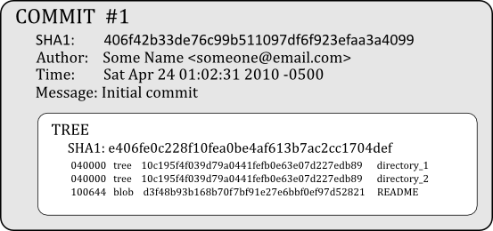
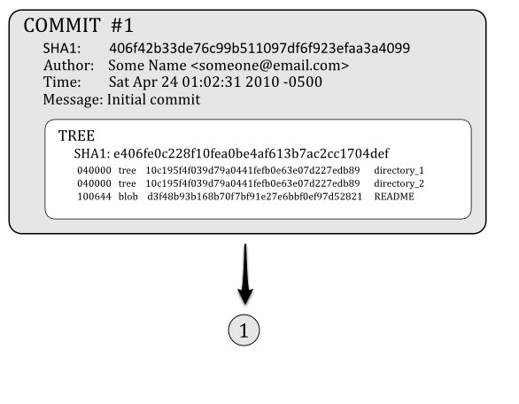
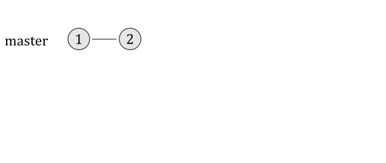
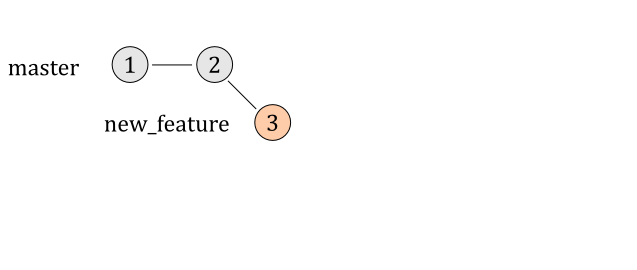
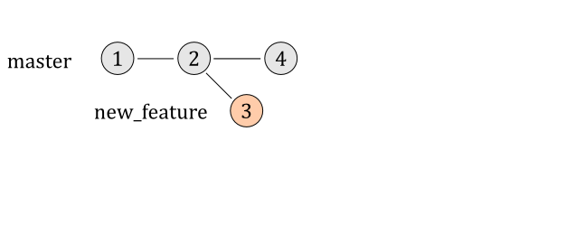
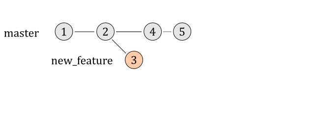
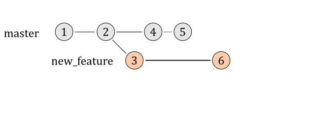
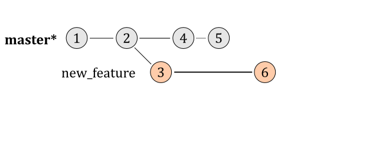
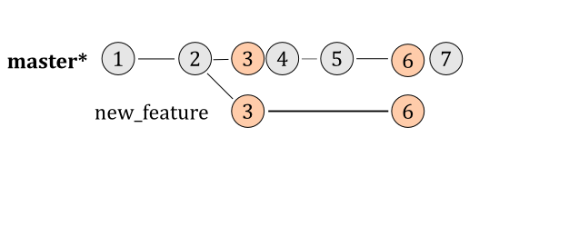
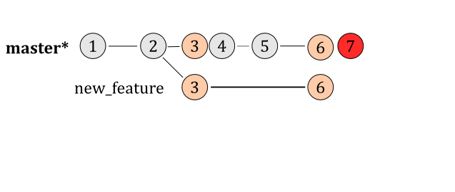
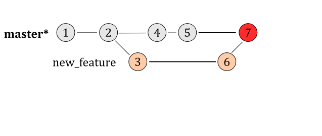
$ git log --pretty=oneline
1732fbcdde81cb419b... Merge branch 'new_feature' into og_master
fd7e4d48a20a3f0dfe... new_feature branch: updated directory_1/README <<<
fccfb4cb17e63d89b2... master branch: updated directory_2/README
d0d98d0c1852d1ba4a... master branch: updated directory_1/README
a8f017105dfb3fcd88... new_feature branch: added readme <<<
388d29fe0ee5189be2... master branch: Added directory_3
406f42b33de76c99b5... master branch: Initial commit
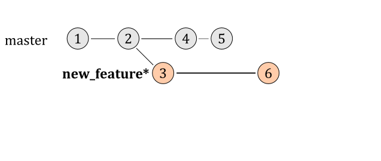
$ git rebase master
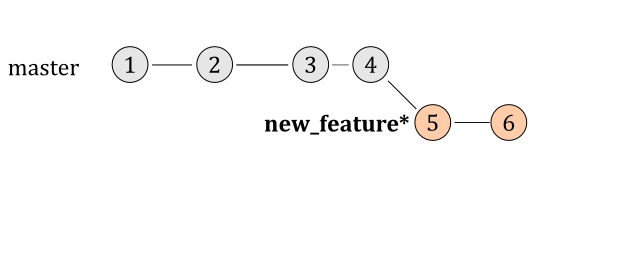
$ git log --pretty=oneline
0ddbe1239f5e32ee18... new_feature branch: updated directory_1/README <<<
31b9f28fe243aa8c2d... new_feature branch: added readme <<<
fccfb4cb17e63d89b2... master: updated directory_2/README
d0d98d0c1852d1ba4a... master: updated directory_1/README
388d29fe0ee5189be2... Added directory_3
406f42b33de76c99b5... Initial commit
Images used
Zipper: http://bit.ly/dxLwNg (slightly modified)
Flux Capacitor: http://bit.ly/c1FMNt
Reference
Git from the Bottom Up PDF, John Wiegly
git-scm.com
gitcasts.com